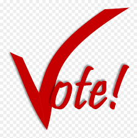

The convinience of using the Politico platform:
The platform is geared towards enhanced user experience and satisfaction by ensuring that you get to decide on your leadership choice with utmost ease.
Transparency is a key component in any electoral process for voters to place their faith in the final outcome. The platform ensures that transparency is achieved by keeping track of proper records generated during the process.
You as a voter can easily go back and review the choices you made concerning your leadership.

If interested in any political office, one can easily register to run for that office without much frustration.